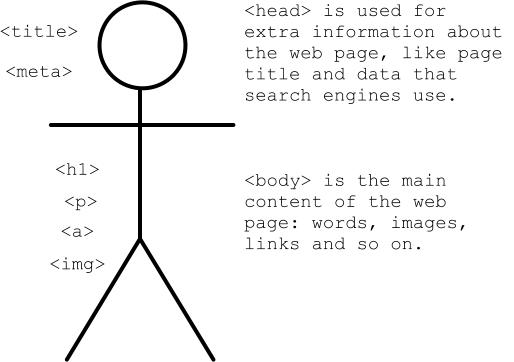

Now let's build our own websites.
All websites are different, but they all have the same structure. It's a bit like a human being: it has a head and a body.
You've seen loads of file extensions before: jpg, gif, doc, html. They're stored on the end of the name of files stored on your computer. If you can't see them, you'll need to go to View > check the "File name extensions" box.
A file extension tells the computer how a file should be opened, for example if you open a file with an .html extension your computer will try to open it in a web browser (because .html files are web pages). But that doesn't mean we can't force the computer to open a file in something else.